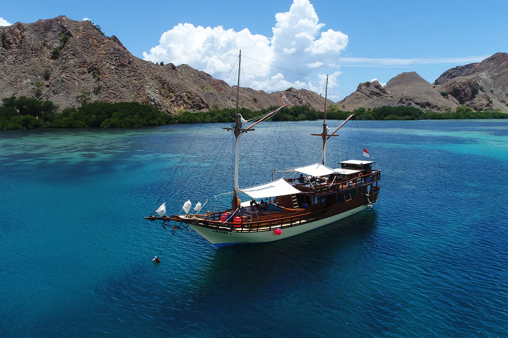

.jpg)
Labuan Bajo, Sepetak Surga yang Terletak di Indonesia Timur
Labuan Bajo merupakan sebuah surga tersembunyi yang ada di Indonesia bagian timur. Desa ini terletak di Kecamatan Komodo, Kabupaten Manggarai Barat, Provinsi Nusa Tenggara Timur yang berbatasan langsung dengan Nusa Tenggara Barat dan dipisahkan oleh Selat Sape. Labuan Bajo adalah salah satu dari lima Destinasi Super Prioritas yang sedang dikembangkan di Indonesia.
Destinasi ini merupakan gerbang menuju Taman Nasional Komodo yang menyimpan keindahan alam yang menakjubkan dan hewan purba yang mendunia. Mulai dari hewan endemik komodo di Pulau Rinca dan Pulau Komodo, deretan pulau eksotis, keragaman hayati bawah laut, hingga pantai aduhai, semua bisa Sobat Pesona temukan dengan memulai perjalanan di Labuan Bajo.
Menikmati pemandangan langit senja juga bisa menjadi cara lain menikmati Labuan Bajo. Spot strategis untuk menikmati keindahan senja ini berada tak jauh dari Bandar Udara Internasional Komodo. Sobat Pesona dapat memilih destinasi Bukit Cinta, Puncak Amelia, dan Puncak Silvia, untuk mengabadikan langit senja yang menentramkan jiwa. Ada juga Gua Rangko yang memiliki pesona bak oasis dengan kolam air asinnya yang begitu menyejukkan.
Kalau Sobat Pesona ingin berpetualang di Labuan Bajo, trekking singkat ke Air Terjun Cunca Wulang bisa jadi pilihan. Jangan lewatkan juga pengalaman seru menjajal live-on-board, yaitu mencoba tinggal di kapal pinisi selama beberapa hari sambil berlayar mengunjungi pulau-pulau yang indah, dan bisa juga menyelam untuk melihat keindahan bawah laut Labuan Bajo yang istimewa.
Gerbang Menuju Surga Dunia
Labuan Bajo dan Taman Nasional Komodo adalah satu entitas yang tidak dapat terpisahkan. Keduanya saling terhubung sehingga ketika Sobat Pesona berada di Labuan Bajo, perlu mengunjungi Taman Nasional Komodo. Untuk mencapai ke sana, Sobat Pesona bisa menggunakan kapal feri atau kapal cepat. Ada banyak pilihan keberangkatan mulai dari pagi hingga sore hari.
Taman Nasional Komodo yang terdaftar sebagai Situs Warisan Dunia UNESCO pada tahun 1991 ini terdiri dari Pulau Komodo, Pulau Rinca, Pulau Padar, dan beberapa pulau lain di sekitarnya. Kehadiran komodo (Varanus komodoensis) yang merupakan kadal raksasa di dunia ini pertama kali diliput dalam jurnal ilmiah pada tahun 1912. Jurnal tersebut ditulis oleh Pieter Antonie Ouwens, Direktur Museum Zoologi Bogor. Penemuan tersebut menjadi awal mula eksistensi Labuan Bajo di mata dunia karena banyak turis dan ilmuwan yang datang untuk melihat langsung ora, sebutan komodo dari warga lokal.
Ketika Sobat Pesona berada di Taman Nasional Komodo, akan disuguhkan beberapa atraksi yang menakjubkan. Salah satunya adalah berfoto bersama Komodo. Ini akan menjadi pengalaman tidak terlupakan seumur hidup yaitu berfoto bersama hewan langka yang hanya ada di Indonesia.
Selain komodo, taman nasional ini juga terkenal akan panoramanya yang memesona. Sobat Pesona yang hobi fotografi, wajib memasukkan beberapa spot di sini sebagai tempat berfoto. Sebut saja Pulau Padar yang ikonik dengan pulaunya yang berbentuk perbukitan serta gradasi laut biru di latar belakang. Pulau Kelor juga tidak kalah keren lho, pemandangan pulau dan laut biru jernih dari puncak Pulau Kelor terlalu indah untuk dilewatkan.
Spot lain yang tidak boleh ketinggalan adalah Pink Beach atau yang dikenal sebagai Pantai Merah oleh masyarakat lokal. Sobat Pesona tahu enggak? Warna merah di pantai ini ternyata berasal dari hewan mikroskopis dan pecahan batu karang berwarna kemerahan di sekitar pesisir pantai.
Kini, Pulau Morotai telah memiliki 53.000 penduduk dan kembali menjadi surga tropis yang tenang. Saat ini, pemerintah Indonesia berencana untuk mengembangkan Pulau Morotai menjadi pusat perikanan, pariwisata, serta jasa.
Oleh-Oleh Khas Labuan Bajo

Jika Sobat Pesona ingin membawa buah tangan sepulang dari Labuan Bajo, ada beberapa suvenir khas yang tak boleh ketinggalan, salah satunya adalah kain songke khas Tanah Manggarai. Kain ini umumnya berwarna dasar hitam dengan beragam motif warna-warni di atasnya. Sama halnya dengan kain Nusantara lain, motif kain songke sangat beragam dan memiliki maknanya tersendiri, lho!
- (laba-laba) menyimbolkan kejujuran dan kerja keras.
- Kawu (bunga kapuk) yang bermakna keterkaitan manusia dengan alam sekitarnya.
- Wela Runu (bunga runu) yang melambangkan bahwa orang Manggarai bagaikan bunga kecil namun menjadi sumber keindahan.
- Ntala (bintang) yang bermakna harapan dan doa baik.
- Ju'i (garis-garis batas) yang memiliki filosofi mendalam bahwa semuanya ada batas akhirnya.
Ada beberapa motif kain songke yang perlu Sobat Pesona ketahui, yaitu:
Sobat Pesona bisa mampir ke pusat oleh-oleh yang terletak di depan Bandar Udara Internasional Komodo untuk mendapatkan kain songke ini.
Beberapa kuliner khas Labuan Bajo yang menggoyang lidah juga bisa Sobat Pesona jadikan sebagai oleh-oleh, nih, seperti kopi manggarai yang terkenal dengan cita rasa pahit yang unik, roti kompiang yang terbuat dari terigu dengan taburan wijen di atasnya, atau camilan yang terbuat dari olahan tepung beras dan kelapa parut, bernama rebok.
Akses Menuju Ke Labuan Bajo
Labuan Bajo dapat diakses melalui jalur darat, laut, dan juga udara. Keindahan Pulau Komodo dengan kekayaan budaya lokal dan pulau-pulau eksotis di sekitarnya membuat Labuan Bajo menjadi tempat wisata yang potensial dan ramai dikunjungi.
- Jalur Udara :
- Jalur Darat :
- Jalur Laut :
Jika Sobat Pesona ingin menggunakan transportasi udara, maskapai Transnusa Airlines secara langsung menghubungkan Labuan Bajo dengan beberapa kota di Indonesia, seperti Makassar, Semarang, Balikpapan, Kupang, dan Mataram.
Jika Sobat Pesona dari Jakarta, dapat menuju Labuan Bajo dengan beberapa maskapai seperti Batik Air dan Citilink. Jadwal keberangkatan antara pagi dan siang hari. Waktu tempuh Jakarta - Labuan Bajo hanya sekitar empat jam.
Sobat Pesona juga bisa melakukan perjalanan ke Labuan Bajo dari Bandar Udara Gewayantana di Flores, Bandara Frans Sales Lega di Ruteng, atau Bandar Udara H. Hasan Aroeboesman di Ende. Untuk informasi jadwal penerbangan lebih lanjut, kunjungi situs web maskapai terkait ya, Sobat Pesona!
Melakukan road trip ke Labuan Bajo via Flores juga menarik untuk dicoba, Sobat Pesona. Rute perjalanannya dimulai dari Flores, Bajawa, Ruteng, Nancar, Mboera, hingga sampai di Labuan Bajo. Alternatif lainnya adalah dari Flores, ke Riung, Wera, Ruteng, Nancar, dan Mboera sebelum berakhir di Labuan Bajo. Perjalanan darat ini bisa memakan waktu hingga 12 jam.
Jika ingin alternatif lain, Sobat Pesona dapat menggunakan bus dari Bali menuju ke Mataram, Lombok. Dari sana, Sobat Pesona akan melanjutkan perjalanan menuju Bima di Sumbawa dan kemudian akan diteruskan melalui perjalanan menuju ke Sape. Saat tiba di Sape, Sobat Pesona dapat menaiki kapal feri menuju Labuan Bajo.
Tertarik menikmati perjalanan dengan transportasi laut ke Labuan Bajo? Sobat Pesona bisa menaiki kapal Leuser dari PELNI yang berlayar dari Makassar, Sulawesi Selatan atau kapal PELNI KM Binaiya yang berangkat dari Denpasar (Benoa) ke Labuan Bajo. Sobat Pesona dapat menemukannya jadwal rincian kapal selengkapnya di www.pelni.co.id.
Itulah hal-hal yang perlu Sobat Pesona ketahui tentang Labuan Bajo. Selain Sobat Pesona bisa mengetahui apa yang menarik di Labuan Bajo, Sobat Pesona juga bisa mengabadikan momen pemandangan dan suasana Labuan Bajo melalui gawai atau kamera. Tetap menggunakan masker, menjaga jarak, dan mencuci tangan dengan air mengalir saat Sobat Pesona berada di tempat wisata mana pun di Labuan Bajo, ya!
Picts Of Labuan Bajo